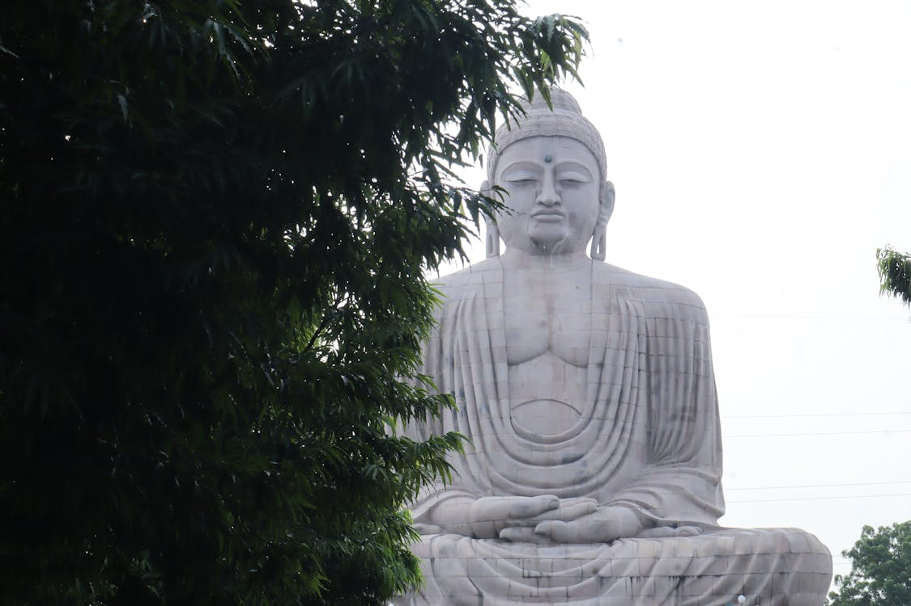

Bihar
Bodh Gaya is the most sacred site in Buddhism, where Prince Siddhartha Gautama attained enlightenment and became Lord Buddha over 2,500 years ago. The town centers around the Mahabodhi Temple complex, a UNESCO World Heritage site, which houses the holy Bodhi Tree—a descendant of the original tree under which Buddha meditated. People from all over the world visit Bodh Gaya to experience its profound spiritual energy and to see the various international monasteries built in traditional architectural styles of countries like Thailand, Japan, Bhutan, and Tibet.
Bodh Gaya is located in Gaya district, approximately 110 km south of the capital city, Patna.
The best time to visit is from October to March. Buddha Purnima (usually in May) is the most significant festival, though it can be very hot.
By Air: Gaya International Airport is just 12 km away; Patna Airport is 115 km away.
By Train: Gaya Junction (13 km) is a major railway station well-connected to Delhi and Kolkata.
By Road: Well-connected by highway to Patna, Varanasi, and Ranchi; regular buses are available.
- Electronics including mobile phones and cameras are restricted inside the main Mahabodhi Temple area (lockers available).
- Dress modestly when visiting temples; shoulders and knees should be covered.
- Hire an authorized guide to understand the deep historical and spiritual significance of the various sites.
- Be prepared for security checks at the main temple entrance.